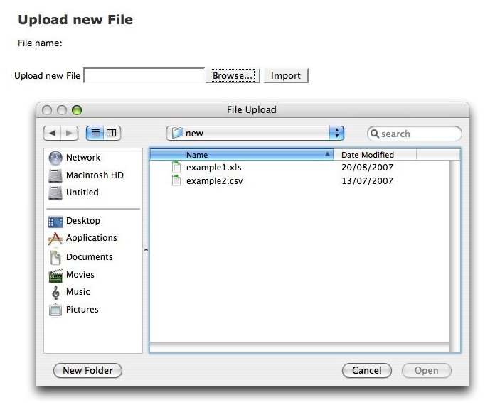

The different possibility to add new users is to add them from an
additional source. For this reason should be prepared file with user's
details. At he moment there is possibility to import only XLS (Excel)
and CSV files.
Example Microsoft Excel file please, find here (see Figure 4.4-1).
|
| Figure 4.4-1: Example content of file. |
To add new users click on the Import button in the toolbar to display the import file tree (see Figure 4.1-2).
Click on the Upload new File button  . Chose the file
from hardrive with using Broswer button and click Import
(see Figure 4.4-2)
. Chose the file
from hardrive with using Broswer button and click Import
(see Figure 4.4-2)
|  |
| Figure 4.4-2: Import file from the hard drive. |
For keeping uploaded files each of them is stored on the hard
drive under the OmeName directory on the path /OMERO/WebAdmin
. Each user is recognized by the icon  . The name includes date when file
was uploaded.
. The name includes date when file
was uploaded.
If file has been uploaded, click to select the file under the branch (see Figure 4.4-3).
 |
| Figure 4.4-3: Choosing the file. |
 |
| Figure 4.4-4: Recognized users from external source. |
Click in the Actions column to select users to import. Select the import button. If the Import is successful the displey will return to the Import page (see Figure 4.1-2).